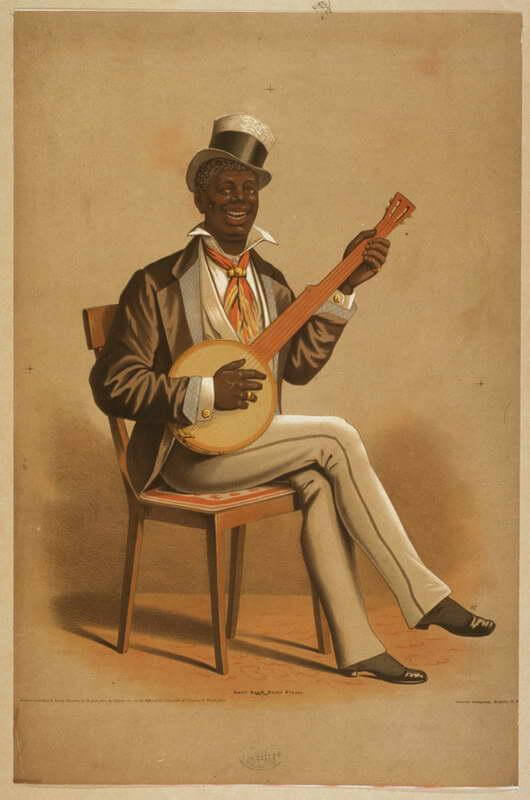

El Banjo.
El Banjo es un instrumento musical de cuatro, cinco, seis (banjo guitarra) o diez cuerdas constituido por un aro o anillo de madera circular de unos 35 cm de diámetro, cubierto por un "parche" de plástico o piel a modo de tapa de guitarra. El parche y el anillo de madera se ensamblan con tornillos metálicos (y el resonador de madera que se añade posteriormente también). La mezcla de materiales que conforman el banjo consigue uno de los instrumentos musicales con un sonido más característico e inconfundible que existen.
Formado por una caja redonda de metal cubierta con una piel tensa como la de un tambor, unida a un mástil largo y estrecho de cuatro a nueve cuerdas; se toca con una púa: el banjo es un instrumento típico del folklore estadounidense.
Origen.
 El banjo, es un instrumento musical de cuerda de origen africano, popularizado en los Estados Unidos por los esclavos en el siglo XIX, y posteriormente fue exportado a Europa. Varios instrumentos de cuerda africanos tienen nombres similares, por ejemplo, bania, banju.
El banjo tiene un cuerpo de pandereta con un aro y un tornillo que asegura el vientre del pergamino al marco. Los estiradores de tornillo se utilizan para variar la tensión del vientre. Las cuerdas pasan por encima de un puente de tipo violín, o de presión, y se enganchan a un cordal. En la década de 1890, se añadieron trastes al cuello largo, y un cabezal con tornillos reemplazó las clavijas de afinación.
Este instrumento posee cuatro, cinco o seis cuerdas con una fina membrana estirada sobre un marco o cavidad como resonador, llamado cabeza. La membrana es típicamente de plástico, aunque la piel de algunos animales todavía se utiliza ocasionalmente.
El banjo estándar tiene cinco cuerdas de metal. Cuatro se afinan desde la cabeza, por lo general a C′-G′-B′-D″ hacia arriba desde (anotado) el Do medio. Precediendo a la cuerda en Do está el chanterelle (zumbido, o pulgar), una cuerda más corta sujetada a un tornillo a mitad de camino en el mástil del banjo. Se sintoniza con la segunda G (anotada) por encima de la C media. La afinación real es una octava más baja que la anotada.
Los orígenes del banjo tal como lo conocemos no están claros. Lo que si se sabe es que las primeras formas del instrumento fueron creadas por africanos en los Estados Unidos, adaptadas de instrumentos africanos de diseño similar. Se parece un poco a los instrumentos de África Occidental, como la kora con sus cuerdas punteadas y la cabeza de piel estirada sobre un cuerpo de calabaza. Pero a diferencia del banjo, la kora tiene un cuello de palo y bucles de metal que funcionan de manera similar a los trastes.
Los primeros instrumentos similares al banjo que aparecieron en América también utilizaban una calabaza para un cuerpo, piel de animal para un resonador y un simple cuello de palo. Tenían varios números de cuerdas que usualmente incluían una que producía un zumbido especial.
La evolución del instrumento.
En el siglo XVII, los primeros prototipos del banjo moderno comenzaron a aparecer en el Caribe. Estos instrumentos con sus diapasones y clavijas de afinación mostraron la influencia de otros instrumentos de cuerda occidentales.
Estas primeras versiones del banjo moderno fueron tocadas por esclavos, y no fue hasta la década de 1830 que un músico blanco de Virginia, Joel Walker Sweeney, se hizo cargo del instrumento. Su banjo tenía cuatro cuerdas de cuerpo entero, una quinta cuerda de zángano más corta y un cuerpo parecido al de un parche de batería. El banjo pronto desarrolló una audiencia a ambos lados del Atlántico cuando Sweeney llevó su acto de juglar a Inglaterra, donde su banjo se convirtió en un elemento básico de la instrumentación de music-hall.
La lesión de Poole.
El banjo disfrutó de una popularidad continuada más allá de la era del juglar, en gran medida gracias a Charlie Poole y su trío, los North Carolina Ramblers. Como resultado de una lesión de béisbol en la mano, Poole adoptó una técnica de tres dedos que se conoce como banjo clásico o de dedos. Con su violín bluesy y sus partes melódicas e intrincadas de guitarra y banjo, los Ramblers y sus populares discos de los años 20 se convirtieron en un prototipo del bluegrass moderno. Influenciado por la técnica de Poole, su compatriota Earl Scruggs de Carolina del Norte, el músico de banjo de los revolucionarios Blue Grass Boys de Bill Monroe, definió el sonido del banjo de bluegrass moderno en la década de 1940.
Partes del banjo.
Este curioso instrumento posee piezas similares a una mandolina, su estructura se basa en una caja de resonancia, un diapasón y un cabezal a caja de afinación…
Partes del banjo.
- El cabezal. O simplemente la cabeza, en esta parte es donde las cuerdas se unen a los afinadores. Los banjos de lujo a menudo tienen incrustaciones elaboradas en la cabeza de clavija.
- Los afinadores. También llamados clavijas de afinación o máquinas de afinación, pueden tener engranajes planetarios o ser del tipo clavija de fricción. Algunos instrumentistas creen que los sintonizadores de engranajes planetarios tienden a ser más fiables.
- El mástil del diapasón. Hecho más comúnmente de arce, el mástil generalmente contiene una varilla metálica que permite ajustes de entonación y proporciona rigidez.
- El diapasón. Está pegado al mástil y sujeta los trastes que se presionan en su sitio. Los diapasones suelen estar hechos de ébano en instrumentos de mejor calidad, o de arce.
- La tuerca. Hecha de hueso, plástico duro o madera, está montada en la base de la cabeza del clavijero y tiene ranuras a través de las cuales las cuerdas son guiadas por el diapasón. Trabaja en conjunto con el cordal para mantener las cuerdas en su lugar.
- El borde. Es el aro que rodea el cuerpo del banjo o «maceta», los bordes modernos suelen estar hechos de múltiples capas de arce o maderas similares. Los banjos más viejos pueden tener bordes metálicos.
- El anillo de tono. Se encuentra situado por encima del borde y por debajo de la cabeza, afecta al rango tonal y a la dinámica del banjo.
- El puente. El puente está hecho de madera y se asienta sobre la cabeza. Al igual que los puentes de violín, el puente del banjo «flota», sujetado por la tensión de las cuerdas. La altura del puente es un elemento más en la creación del tono del banjo con puentes más pesados y densos.
- Las cuerdas. Cuando se tocan las cuerdas del banjo, la vibración se transmite a través del puente a la cabeza, lo que a su vez hace que el borde y el anillo de tono vibren, produciendo el sonido del banjo.
- El resonador. Como se indica a continuación, no todos los banjos están equipados con esta placa de metal que está montada en la parte posterior del banjo y proyecta el sonido hacia adelante.
- El cordal. Mantiene las cuerdas en su sitio y bajo tensión. Lo ideal es que el cordal sea ajustable para ajustar el sonido del instrumento, y que sea resistente a las vibraciones para evitar añadir tonos de llamada a la salida del banjo.
Tipos de banjos.
A pesar de que se cree que los banjos son instrumentos poco desarrollados y que solo existen 3 o menos tipos de banjos, esto no podría ser menos cierto. Existen varios tipos de banjos y cada uno presenta características distintas, ahora conoceremos los más resaltantes…
Banjos de Resonancia.
Estos banjos equipados con resonadores usan esa pieza de metal para proyectar el sonido del banjo hacia adelante.
anjo de 5 cuerdas.
B Aunque es fácil pensar que las cuerdas de un banjo son como las cuerdas de una guitarra, son realmente muy diferente. Te darás cuenta cuando estés tocando las cuerdas de un banjo, que no están afinadas desde de abajo hacia arriba a través del instrumento como si estuvieran en una guitarra.
Banjo salón de 5 cuerdas.
También llamado banjo de viaje debido a su portabilidad, este banjo tiene un cuello corto y pesa menos que otros banjos. Es ideal para niños o personas con un marco pequeño. Podría tener la espalda abierta o un resonador y aún así no afectará el peso del instrumento.
Banjo de cuello Largo 5 Cuerdas.
Este banjo fue traído al mundo por Pete Seeger, que era un icono de la música folklórica. Era parte del Kingston Trio. Ellos trajeron muchas canciones al mundo de la música folklórica. Está afinado igual que otros banjos.
Banjos de 4 cuerdas.
Los banjos de 4 cuerdas se dividen en dos categorías: el tenor y la púa. El tenor tiene una escala corta comparada con el banjo de 5 cuerdas. Es popular para ciertos tipos de música como canciones tradicionales irlandesas. La púa tiene un tono y un rango similar al de las 5 cuerdas, pero no tiene el mismo tono en la cuerda en absoluto.
Banjo de 6 cuerdas e híbridos.
El banjo de 6 cuerdas no es un concepto nuevo en el mundo de los banjos, pero sólo ha existido en los últimos años desde el siglo XIX. Eso es nuevo en el mundo de los banjos, sin embargo las 6 cuerdas están afinadas como una guitarra con la progresión de los sonidos de las cuerdas que oirías de la guitarra tradicional.
El banjo y la guitarra, ¿son iguales?
Aunque ambos instrumentos tienen un aspecto bastante similar, con cuerdas, un puente y un mástil, los sonidos que producen son de alguna manera completamente diferentes. ¿Por qué? La respuesta es que las cuerdas de un banjo reaccionan de una manera muy compleja cuando se tocan. Tiene que ver con la acústica, la física y la forma en que se hace el banjo.
El banjo es básicamente un tambor con un mástil largo y cuerdas estiradas a través de él, colocadas en ambos extremos. Un puente soporta las cuerdas sobre la membrana del tambor. La membrana del tambor es muy delgada, generalmente de unas 12 milésimas de pulgada de espesor. Por el contrario, la caja de resonancia de una guitarra tiene un grosor aproximado de 1/8 de pulgada, con el puente fijado a la caja. Cuando se toca una cuerda de banjo, el tambor resuena y el puente vibra, emitiendo un sonido. Un punteado de banjo es mucho más fuerte que un punteado de guitarra porque la delgada cabeza del banjo vibra mucho más.
{kind=link}